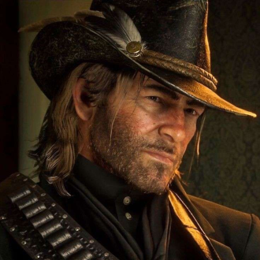
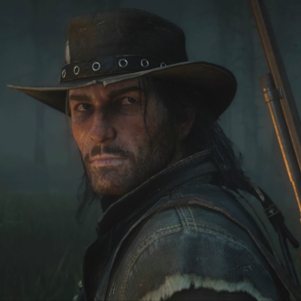
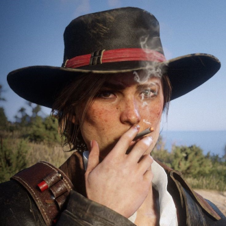
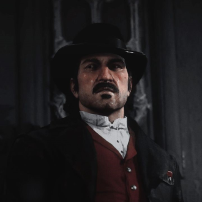
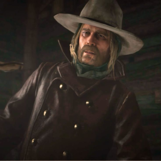
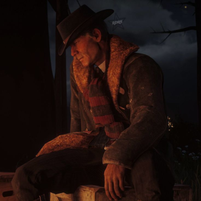

-
Arthur Morgan
Descrição
Arthur Morgan é o protagonista de Red Dead Redemption 2. Sendo membro e líder principal da gangue Van der Linde, a vida de fora-da-lei é tudo o que ele conhece. Arthur é um assassino astuto e tranquilo, mas sem piedade, ainda que tenha seu próprio senso de honra. Um homem que garante que o trabalho seja feito.
-
John Marston
Descrição
John Marston é o protagonista secundário de Red Dead Redemption 2. Vivendo a vida de fora-da-lei desde que era uma criança, John foi salvo por Dutch de um linchamento e, posteriormente, se juntou à gangue Van der Linde. Ele foi criado e moldado para a vida de fora-da-lei junto com seu irmão adotivo, Arthur Morgan.
-
Sadie Adler
Descrição
Sadie é uma viúva que está decidida a se vingar daqueles que mataram seu marido. Implacável e sem medo de nada e de ninguém. A mulher errada para cruzar, mas muito leal com aqueles que ama.
-
Dutch
Descrição
O líder da gangue Van der Linde, Dutch, tem um sonho de viver livre das amarras e restrições das leis do governo. Ele tem algo que inspira as pessoas a segui-lo e as dá grandes aspirações, o que o torna especialmente perigoso para as autoridades que o perseguem. Ainda mais que ele vê esses policiais e agentes como os verdadeiros criminosos.
-
Micah Bell
Descrição
Micah é considerado violento e imprevisível, até mesmo para os padrões da gangue Van der Linde.Apesar de sua natureza ousada, Micah é um criminoso experiente e assassino de aluguel, o que conquistou Dutch. Ele tem um relacionamento ruim com a maioria dos membros da gangue, já que ele frequentemente os antagoniza e intimida, às vezes chegando a fazer ameaças coloridas àqueles de quem não gosta.
-
Hosea Matthews
Descrição
Hosea é um bandido inteligente em contato com sua sabedoria, tendo trabalhado como vigarista e ladrão por mais de duas décadas. Ele parece ser um falador habilidoso, usando seu cérebro para entrar e sair de qualquer situação. Ao contrário de Arthur ou Dutch, Hosea prefere não usar a violência como meio de obter dinheiro.